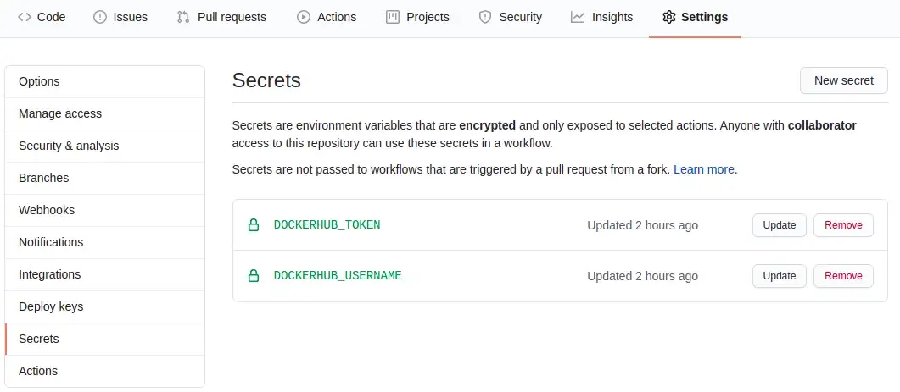

Using GitHub Actions to speed up CI/CD in data science projects
As the latest advances regarding cloud computing, it has become even more necessary for the implementation of tools that are, at the same time, scalable, and that ensure the reproducibility of the execution. Having this need in mind, a few tools arose to the job, such as Docker, that allow the creation of a “recipe” of the application, ensuring that different builds of the same application run equally.
Differently than a Virtual Machine (VM), that provides an infrastructure through Hypervisors and emulates processors and memory, Docker shares these resources throughout the containers, allowing the developer to focus less on the infrastructure and more on the development of the application. Nonetheless, the containerization of projects and applications mitigates the expression “It Runs on My Machine”, given that it tries to ensure that, independently on the platform chosen by the developer, the Docker container executes always in the same way.
Given that the benefits of containerization go beyond the development of applications and can be useful in other fields, many data scientists began to use Docker to containerize their analysis, model training, dashboards, and APIs, both to make the delivery of projects easier (given that it reduces the possibility of bugs) and to ensure that the results found once, can always be reached again.
CI/CD — Continous Integration and Continuous Deployment
Even though many insights and machine learning models generated by data scientists are valuable, they fail to add value to the business they are inserted when the projects are stuck in a personal machine that cannot be used by other people. Therefore, to ensure that any modifications are identified and its results are expanded to other teams, there is the process of Continous Integration and Continous Deployment (CI/CD), that allows the automation of the testing and deploy processes in initial versions of the project.
Many people may be familiar with the concepts of CI/CD, however, many of the tools that are used for this process are paid (such as Jenkins, CircleCI, and TravisCI), limiting its use only to people that:
are willing to pay the price of these tools;
or are working in a company that already has a CI/CD cycle deployed.
GitHub and GitHub Actions
GitHub is a well-known code versioning platform that has more than 40 million users and more than 100 million repositories, being an enormous source of open-source code, available to thousands of people anywhere in the world.
Aiming to support the creation of open-source projects, as well as allow their users to abstract the processes involving CI/CD, GitHub created in 2019, the GitHub Actions tool. It allows the automation of workflows defined by the user to help with integrated tests, validation of Pull Requests, and many other features. Moreover, the number of actions to be used by the user grows by the day, given that many companies are looking to develop tools to help the users community. Many of these actions already allow the integration of many popular tools such as Docker, AWS CloudFormation, Terraform, and many others that can be found here.
Even though GitHub Actions is free to use only for non-private repositories, there are different levels of use that can be leveraged in private projects, before considering the use of any GitHub Enterprise tools. This opens the doors so that many people that develop open-source projects can test their tools and spread their findings in a more automated and scalable way.
Docker Login & Docker Build and Push
One of the tools developed to be used alongside GitHub Actions is the login actions in repositories that allow the storage of Docker images (such as Docker Hub, ECR from AWS, GCR from GCP), as well as the build of these images without the need to occupy the user’s machine. With these in mind, two actions are declared in the CI workflow file, that can be found in these links: docker/login-action and docker/build-push-action.
Inserting Data Science in the CI/CD process
The Data Science field is full of different frameworks, dependencies, and different languages that can be used according to the need and abilities of the data scientist, but a common truth amongst them is that they all have the possibility of being encapsulated by a containerization process, helping to ensure the reproducibility of the project.
With that in mind, the example used by me to deploy the automation tool of GitHub Actions involves the development of a web application using R’s Shiny library. Nevertheless, the same workflow implementation could be used to deploy APIs developed using Python’s FastAPI, i.e., or any other framework that can be encapsulated in a Docker container.
The project can be found here: paeselhz/ghActionsDockerShiny. I won’t be entering in details of the development of the application, because the example used by me is relatively simple and have no elaborate development. The focus of this article is the containerization of the project, and the workflow automation to build the image and store it in Docker Hub, making it available for further downloads.
Creating the Dockerfile
For those familiarized with the Dockerfile and its syntax, the execution is the same as expected in a project that will be developed, built, and ran locally with Docker. In it, we declare the base image that will be used for further installation of libraries and dependencies, as well as the configuration of the project, file copy, and other steps that usually can be added to a Dockerfile.
FROM rocker/shiny:4.0.0
RUN apt-get update \
&& apt-get install -y \
libxml2-dev \
libglpk-dev \
&& install2.r \
--error \
dplyr \
shiny \
purrr \
highcharter \
shinyWidgets \
shinycssloaders \
devtools \
xml2 \
igraph \
readr
RUN R -e "devtools::install_github('wilsonfreitas/rbcb')"
COPY . /srv/shiny-server
RUN chmod -R 777 /srv/shiny-serverThis script, which is located in the project root directory, is responsible to gather an image that already has Shiny and its dependencies installed, and the installation of libraries that will be used by the app developed within R.
Creating the Workflow file
To GitHub Actions know which steps need to be taken for the workflow automation, it becomes necessary to create a file within the project that will be located at .github/workflows/main.yml, the file syntax is the same as any YAML file, being easy to code. In case the user does not want to do this process locally and commit the changes, GitHub itself has an online code editor for the creation of the workflow.
In this file are declared a few steps such as the name of the workflow, the triggers that will be used to deploy the workflow execution, and the jobs that it will be responsible for executing. The name and trigger parts of the file are highly customizable, and the user can change it in many ways, moreover, in the part of the job, there are a few steps that are needed for the job to login in Docker Hub, configure BuildX (a tool that will be used to build the image), configure QEMU (a tool that will be allowing multi-platform builds), deploy the built image to Docker Hub, logout and clean the machine to ensure that no processes are still running.
# Setting up a Workflow to work with Github Actions
name: ci
# Controls to when trigger the GH Action
# Below are configurations to the following triggers:
# - commits at master branch
# - tag commits at the project
# - scheduled to run at 01:00GMT
# The user can also configure triggers at pull requests
# as well as remove branches from triggering GH Actions
on:
push:
branches: [ master ]
tags: [ '*.*.*' ]
schedule:
- cron: '0 1 * * *'
# Below there is the job configuration to build the image
# and push it to a DockerHub repository
jobs:
docker:
runs-on: ubuntu-latest
steps:
-
name: Checkout
uses: actions/checkout@v2
-
name: Prepare
id: prep
run: |
DOCKER_IMAGE=<USER_NAME>/<REPOSITORY_NAME>
VERSION=noop
if [ "${{ github.event_name }}" = "schedule" ]; then
VERSION=nightly
elif [[ $GITHUB_REF == refs/tags/* ]]; then
VERSION=${GITHUB_REF#refs/tags/}
elif [[ $GITHUB_REF == refs/heads/* ]]; then
VERSION=$(echo ${GITHUB_REF#refs/heads/} | sed -r 's#/+#-#g')
if [ "${{ github.event.repository.default_branch }}" = "$VERSION" ]; then
VERSION=edge
fi
fi
TAGS="${DOCKER_IMAGE}:${VERSION}"
if [[ $VERSION =~ ^[0-9]{1,3}\.[0-9]{1,3}\.[0-9]{1,3}$ ]]; then
MINOR=${VERSION%.*}
MAJOR=${MINOR%.*}
TAGS="$TAGS,${DOCKER_IMAGE}:${MINOR},${DOCKER_IMAGE}:${MAJOR},${DOCKER_IMAGE}:latest"
elif [ "${{ github.event_name }}" = "push" ]; then
TAGS="$TAGS,${DOCKER_IMAGE}:sha-${GITHUB_SHA::8}"
fi
echo ::set-output name=version::${VERSION}
echo ::set-output name=tags::${TAGS}
echo ::set-output name=created::$(date -u +'%Y-%m-%dT%H:%M:%SZ')
-
name: Set up QEMU
uses: docker/setup-qemu-action@v1
-
name: Set up Docker Buildx
uses: docker/setup-buildx-action@v1
-
name: Login to DockerHub
if: github.event_name != 'pull_request'
uses: docker/login-action@v1
with:
username: ${{ secrets.DOCKERHUB_USERNAME }}
password: ${{ secrets.DOCKERHUB_TOKEN }}
-
name: Build and push
id: docker_build
uses: docker/build-push-action@v2
with:
context: .
file: ./Dockerfile
platforms: linux/amd64
push: ${{ github.event_name != 'pull_request' }}
tags: ${{ steps.prep.outputs.tags }}
labels: |
org.opencontainers.image.title=${{ github.event.repository.name }}
org.opencontainers.image.description=${{ github.event.repository.description }}
org.opencontainers.image.url=${{ github.event.repository.html_url }}
org.opencontainers.image.source=${{ github.event.repository.clone_url }}
org.opencontainers.image.version=${{ steps.prep.outputs.version }}
org.opencontainers.image.created=${{ steps.prep.outputs.created }}
org.opencontainers.image.revision=${{ github.sha }}
org.opencontainers.image.licenses=${{ github.event.repository.license.spdx_id }}The workflow code has almost none external dependencies, given that the creation of the Docker image name and its tags are within this code, however, it needs a pair of Secrets to log in at Docker Hub, in this case, the username used by Docker, and a Token to log in at Docker Hub (which can be generated here). With the username and Token, the user just needs to go at their repository, in the Settings tab and add the token in the Secrets subpage, as seen in the image below:

With these steps, the project should be able to be executed using GitHub Actions to allow the automation of the build, test, and deploy processes.
In the example used by this article, the final image can be found at Docker Hub here, and tested locally by running the command:
docker run -p 3838:3838 lhzpaese/ghactions_docker_shiny:latest
Sources
Many of the references to projects and tools used in this article are added in form of Hyperlinks along with the text. However, I’d like to leave the Docker Webinar that served as inspiration for this project, presented by metcalfc, where he introduces the tools used for the integration of GitHub Actions and Docker.
Thanks for your attention, and any questions or suggestions, please do not hesitate to contact me at LinkedIn, and paeselhz.